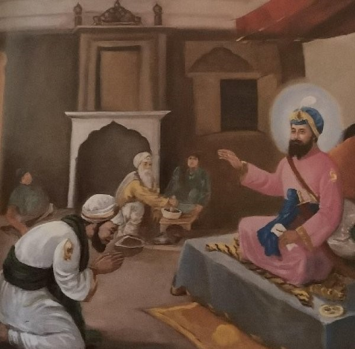

A Story of True Humility and Grace

Guru Har Rai Ji was the seventh Guru of the Sikhs. Known for his compassion and kindness, he lived a life filled with humility. Even though he was a great spiritual leader, he remained soft-spoken and always served others.
One day, young Guru Har Rai Ji was walking through the beautiful garden planted by the Gurus. While walking, his robe accidentally brushed against a rose bush. Some flowers fell to the ground.
When Guru Ji saw the flowers had fallen, he became very sad. He gently picked up the petals and said, “We must walk through this world without harming even a flower.”
He told the sevadars, “Just as we care for nature and Waheguru’s creation, we must care for every soul with humility.” Guru Ji’s small act taught a great lesson – the more power you have, the more humility you must show.
“Guru Har Rai Ji taught us that real strength is in walking gently and humbly through life.”